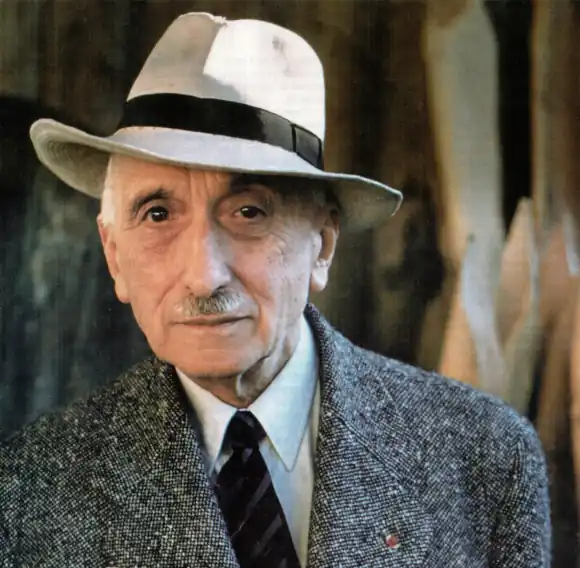
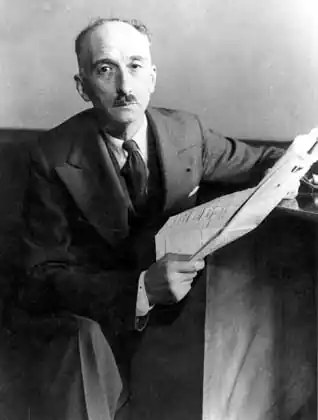

МОРІАК, Франсуа (Mauriac, Francois — 11.10.1885, Бордо — 01.09.1970, Париж) — французький письменник, лауреат Нобелівської премії 1952 р.Моріак народився в сім'ї заможних бордоських буржуа. Його предки по материнській лінії були комерсантами, а з боку батька — розбагатілими фермерами, землевласниками. Мати Моріака зосталася вдовою з п'ятьма дітьми, коли майбутньому письменникові не виповнилося й двох років. У Бордо, з трьома братами та сестрою, Моріак прожив до двадцяти років. Брати стали адвокатом, лікарем, священиком. Моріак вступив в університет, який закінчив у ступені магістра з літератури. Потім він переїхав у Париж, вступив у Школу істориків-архівістів, та невдовзі покинув її, захопившись поезією. Ні замолоду, ні у зрілі роки Моріак не прагнув до службової кар'єри. Не любив він і мандрувати, жив то в Парижі, то у своєму маєтку Молаґар, неподалік від Бордо. Був одружений, його син Клод Моріак також став відомим письменником.
Відсутність батька та виховання релігійною матір'ю у замкненому родинному колі Моріак вважав важливим фактором свого становлення. Проблеми гріха та благодаті, спокус духу та плоті хвилювали його з юних літ і відобразилися вже у першій поетичній збірці "Молитви" (букв.: "Руки, складені для молитви" — "Les mains jointes", 1909). Про поета схвально відгукнувся Г. Алоллінер. Серйозну статтю про збірку написав М. Баррес, обдарований письменник-"ґрунтівець", чий вплив Моріак охоче визнавав. Після першої збірки з'явилася й наступна — "Прощання з отроцтвом" ("Adieu a l'adolescence", 1911).
У ранніх збірках автор пов'язаний з традицією "католицьких поетів", яку він долає в книгах віршів "Грози"("Orages", 1925) та "Кров Атіса" ("Sang d'Aty", 1940), де відчутний язичницький, тілесний первень. Поезія Моріака справила посутній вплив і на прозу, яка помітно її відтіснила. Славу як романіст Моріак встиг зажити ще до війни, видавши романи "Дитя під ваготою ланцюгів"("L'Enfant charge de chames", 1913) і "Патриціанська тога"("La robe pretexte", 1914). Перша світова війна вирвала письменника із замкненого світу. Моріак був звільнений від призову до війська за станом здоров'я, але після тривалих клопотів він домігся зарахування у загін Червоного хреста й служив санітаром у Франції та Греції, в Салоніках. Події ці не знайшли безпосереднього відображення ані в його віршах, ані в романах. Лише в публіцистиці Моріак висловив своє неприйняття насильства, особливо його крайніх форм. У період війни в Іспанії він рішуче засудив фашизм: "З 1936 року я відкрито виступав проти Франко". І коли Моріак свідчив, що "не зраджував більше цієї лінії", він міг мати на увазі й публікацію у підпільному видавництві "Minuit" антифашистської брошури "Чорний зошит"("Le carrier Noir"), і протест проти американської агресивної політики на Сході, і критику радянського режиму. На схилку життя письменник зізнавався, що ранковий запах свіжої друкарської фарби від газет завжди викликає в нього трепет. Його щоденники рябіють іменами державних діячів, згадками про європейські події, критичними зауваженнями на адресу народів і урядів. Через сотні і тисячі сторінок "щоденників", "інтимних нотаток", "блокнотів", "мемуарів" намагається Моріак проповідувати свої політичні й моральні погляди, впливати на суспільну опінію, а отже, й на долю Європи. Звідси бере початок прагнення протистояти декадансу, відродити смак до героїки, що спричинює з'яву таких книг, як "Шарль де Голль", де французький президент підноситься на один п'єдестал з Жанною д'Арк і стає своєрідним символом національного самоусвідомлення. Але навіть в есе, ускладнених політичною думкою, головною турботою Моріака залишається аспект моральний. На відміну від багатьох сучасників, Моріак не довіряв суспільному прогресу і тому, що революція може змінити природу людини. В есе, присвячених релігійній "психології — "Життя Расіна" ("Vie de Racine", 1928), "Роман" ("Le Roman", 1928), "Бог і Мамона" ("Dieu et Mammon", 1930), "Страждання та щастя християнина" ("Souffrance et Bonheurdu chretien", 1931), "Життя куса" ("Vie de Jesus", 1936), "У що я вірю" ("Се que je crois", 1962),— шлях спасіння Моріак вбачає в любові, прощенні, божественній благодаті. Однак стосунки Моріака з релігією складалися непросто. Його символ віри сформувався під впливом філософії Б. Паскаля і забарвлений відтінком єресі. Письменник схиляється то до моральної безкомпромісності янсеністського вчення, що тривожило колись сумління улюбленого Расіна, то до т. зв. "модернізму", що намагався примирити догмати релігії із сучасними науковими уявленнями. Знайомство з філософом Ж. Марітеном більш особистісним чином наблизило його до неотомізму, однієї із найвпливовіших течій католицької філософії, хоча сам Моріак заперечував свою належність до будь-яких філософських доктрин. Зближення у 20-х pp. із групою "Нувель Ревю Франсез", що збирала письменників довкола однойменного журналу, не похитнуло християнсько-ліберальних поглядів Моріака, хоча змусило знову замислитися над романною технікою, звернувшись до досвіду не лише великих попередників — О. де Бальзака, Г. Флобера, але й сучасників — М. Пруста, А. Жіда, Р. Мартена дю Ґара. Звернення це ніколи не мало характеру наслідування. Навпаки, вже у 20-х pp. у Моріака складається особливий тип роману, що втягує в орбіту впливу таких значних митців, як Ж. Бернанос та Ж. Грін. Дія у М. найчастіше розгортається в пласкому понурому краї, овіяному звідусіль вітрами, які підхоплюють і відносять від океану вглиб суші дрібнесенький кварцовий пісок. Так утворюються Великі Ланди, земля терплячих фермерів-здольників, укрита рівними рядами сосон та виноградників. Єдиним великим містом на цьому березі рибалок і пастухів століттями залишався Бордо. Це батьківщина Моріака "Бордо — моє тіло і моя душа, його будинки та вулиці — події мого життя", — сказав сам письменник, підкреслюючи ту глибоку внутрішню єдність, яка пов'язувала його з цими краями. У вік далеких подорожей і невтримного потягу до нових вражень Моріак утверджує радість спілкування з рідною природою, вважаючи "потяг де зміни місць" радше ознакою духовної нестійкості. Моріак зізнавався, що може писати лише про людей, котрі живуть поряд роками та десятиліттями, чиї будинки, розташування кімнат, начиння та запахи передпокою знайомі йому з дитинства. Подорожні свідчення видаються йому поверховими та легковажними, тоді як між землею, що спородила людину, та нею самою існує міцний внутрішній зв'язок. Люди, фатально роз'єднані своїми корисливими помислами та потаємними гріхами, віднаходять, завдяки природі рідного краю, в собі риси, які зближують їх, чи, точніше кажучи, той ґрунт, на якому можливе зближення. Так утворюється перше коло моріаківської оповіді. Ланди — не лише його тло і навіть не лише його вічний сюжет, хоч і перше і друге справедливо і неодноразово зауважувалося критикою Ланди для Моріака — природне буття, без якого неможливе збереження духовного первня. Крім цього першого, є ще й друге коло. Усі твори Моріака, аж до його останнього, передсмертного "Підлітка минулих часів" (1969), близькі де жанру сімейного роману. Працюючи в цьому старовинному жанрі, підкріпленому у Франції потужною традицією Е. Золя, Моріак вже у 20-х рр знайшов свій, особливий кут зору, змусив говорити про моріаківський тип роману та про специфічно моріаківського персонажа, хоча тут не обійшлося без докорів щодо певної одноманітності фону та сюжету. Після роману "Поцілунок прокаженому" ("Le Baiser au lepreux", 1922; з'явилися відразу два романи: "Прамати" ("Genitrix", 1924) та "Вогняний потік" (1924), а потім низка інших, з яких найзначнішими є "Тереза Дескейру" ("Therese Desqueyroux", 1927), "Гадючник" ("ht nosud се viperes", 1932), "Таємниця Фронтенака" ("Le Mystere Frontenac", 1933), "Кінець ночі" ("La Fin delanuit", 1935), "Дорога в нікуди" ("Les Chemins de la mer", 1939), "Фарисейка" ("La Farisienne". 1941), а також повість "Мавпочка" (1951). Знайдена тема — стосунки в буржуазній родині з бордоських Ланд — здавалася невичерпною. Юнг дівчина виходить заміж за карлика "прокаженого", оскільки його родині потрібен спадкоємець Бідна гувернантка одружує на собі безвольно:; юнака, здобувши піррову перемогу над його матір'ю. Молода жінка щодня збільшує чоловікові дозу ліків, повільно вбиваючи його. Старий адвокат напередодні смерті вступає в сутичку з дітьми через спадок. Через гроші сваряться колишні подруги, розладнується весілля їхніх дітей. Мати ладить сина за доньку заможного сусіда, а він закохується в продавщицю із сумнівним минулим. Обмеживши сферу зображення рамками родини, Моріак природно змушений підкоритися законам розвитку сюжету, де персонажі співвіднесені один із одним передусім за родинною ознакою. Моріак вважав, що родину можна розглядати як мікросвіт, мікровсесвіт, де виявляються "найгірші інстинкти", трапляються свої війни, здобуваються перемоги і, поєднавшись в ім'я любові, люди "віддаються ненависті". Лише в публіцистиці Моріак згадує про ті незапам'ятні часи, коли сім'я, складаючись сама, цементувала націю. Але при цьому родина — які б війни не перекочувались через неї — постає у свідомості Моріака як щось тривке, непорушно складене. У моріаківському романі це "живі тюремні грати з ротів, вух, очей", але й поза межами цієї клітки людське існування уявляється йому немислимим. І річ не лише в тому, шо сім'я необхідна людям як опора в дитинстві чи в слабкості, але й у тому, що самотність, "позасімейність" відразу ж ставлять людину в становище морального вигнанця. Так, випущена, врешті, на свободу Тереза почуває, "що варто їй трохи довше посидіти нерухомо, як довкруж неї здіймається темний вир, непевне хвилювання, так само як потяглися б до неї мурахи та позбігалися пси, коли б її тіло лежало, нерухомо простягтись, серед пісків південних Ланд". Її ніч у Парижі ще похмуріша та безнадійніша, ніж в аржелузькому загумінку. Побит буржуазної родини поганий, але одночасно у Моріака це звичний, споконвічний і для багатьох людей нормальний уклад. Більше того, побут і буття постають у нього в органічному зв'язку. Подробиці, деталі, дрібниці життя наділені в цьому контексті особливою вагомістю.